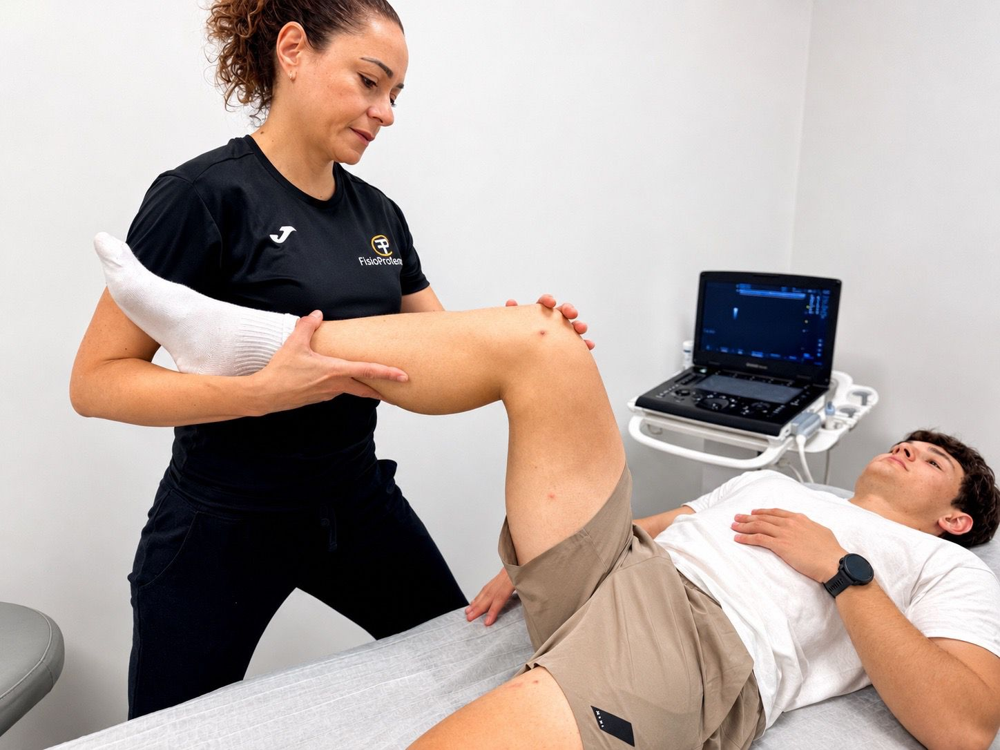
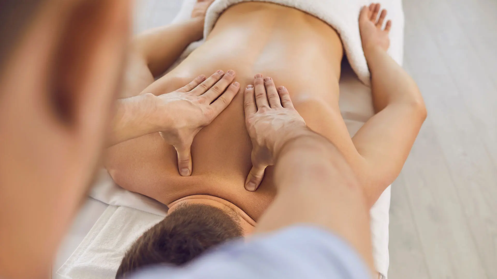
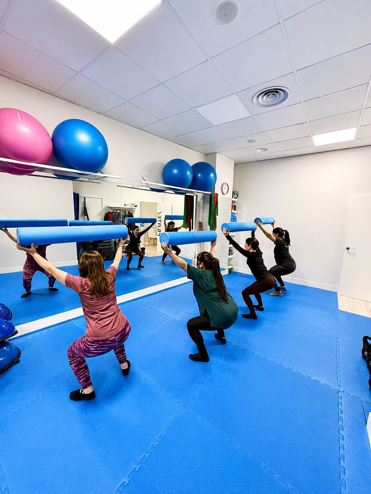

Fisioterapia General y Avanzada
Valoración individual, terapia manual, ejercicio terapéutico y técnicas avanzadas para dolor muscular, articular y recuperación funcional.
Más información
Tratamientos personalizados para aliviar el dolor, recuperar tu movilidad y mejorar tu bienestar con un enfoque profesional, cercano y basado en valoración clínica.
Tratamientos diseñados después de una valoración individual para ayudarte a reducir dolor, recuperar movilidad y mejorar tu calidad de vida.

Valoración individual, terapia manual, ejercicio terapéutico y técnicas avanzadas para dolor muscular, articular y recuperación funcional.
Más información
Recuperación de lesiones deportivas, readaptación, trabajo de fuerza, movilidad y prevención para volver al entrenamiento con seguridad.
Más información
Tratamiento especializado para molestias mandibulares, bruxismo, cefaleas asociadas y dolor orofacial relacionado con la articulación temporomandibular.
Más información
Clases guiadas para mejorar fuerza, movilidad, postura y control corporal con ejercicios adaptados a cada persona.
Más información
Acompañamiento psicológico profesional para cuidar también tu bienestar emocional.
Ver servicioWhatsApp psicologíaEn FisioProtema no solo tratamos lesiones: nos centramos en mejorar tu calidad de vida con una atención personalizada, cercana y basada en la evidencia.
Diseñamos cada tratamiento según tu problema, objetivos y evolución.
Trabajamos con terapia manual, ejercicio terapéutico y técnicas avanzadas cuando el caso lo requiere.
Buscamos cambios medibles en dolor, movilidad, fuerza y función.
Te explicamos cada paso del proceso para que sepas qué hacer dentro y fuera de la clínica.
Nuestro enfoque combina valoración individual, fisioterapia avanzada y tratamiento activo para ofrecer resultados eficaces y duraderos.
Cada paciente es único. Realizamos una valoración completa para entender el origen de la molestia y diseñar un tratamiento adaptado.
Aplicamos técnicas como punción seca, EPI, neuromodulación, diatermia u ondas de choque si están indicadas.
Tratamos lesiones musculoesqueléticas, deportivas y dolor orofacial con un enfoque centrado en función.
No solo tratamos el dolor: te ayudamos a recuperar fuerza, movilidad y control para prevenir recaídas.
Valoración 5.0 en reseñas públicas. Testimonios mostrados como contenido informativo, sin marcado estructurado de reseñas.
Llevo 1 año con David. Me ha aliviado mis dolores crónicos. Encantada de esta clínica.
Vine por recomendación de mi compañero del gimnasio y la verdad que lo mejor que he podido hacer. Recomendaría a mis conocidos.
Uno de los mejores centros de fisioterapia en Leganés. Profesionales y volcados con sus pacientes.
Muy buena clínica y muy bien equipada. Me trataron satisfactoriamente una tendinitis.
Opciones claras para sesiones individuales, bonos de fisioterapia y pilates funcional.
Sesión individual
Sesión individual
Tarifa especial3 sesiones
Ahorro de 9€10 sesiones
Ahorro de 50€1 día a la semana
Trimestre: 150€2 días a la semana
Trimestre: 245€Las tarifas pueden actualizarse. Confirma siempre disponibilidad y condiciones al reservar cita.
Artículos útiles y específicos para resolver búsquedas reales de pacientes en Leganés.


C. de Polvoranca, 21, Local, 28911 Leganés, Madrid
Estamos aquí para ayudarte. Contáctanos para reservar una cita o solicitar más información.
C. de Polvoranca, 21, Local, 28911 Leganés, Madrid
Formamos parte de la guía oficial del Colegio Profesional de Fisioterapeutas de Madrid.


Respuestas directas para pacientes y buscadores conversacionales.
FisioProtema está en C. de Polvoranca, 21, Local, 28911 Leganés, Madrid.
Ofrece fisioterapia general y avanzada, fisioterapia deportiva, tratamiento de dolor orofacial y ATM, pilates funcional y colaboración de psicología.
Puedes pedir cita por teléfono o WhatsApp en el 637 883 587.
La sesión individual de fisioterapia tiene una tarifa de 45€. También hay tarifas para mayores de 65 años, bonos y pilates funcional.
La web muestra la documentación visual de inscripción en la Guía de Centros de Fisioterapia del Colegio Profesional de Fisioterapeutas de la Comunidad de Madrid.